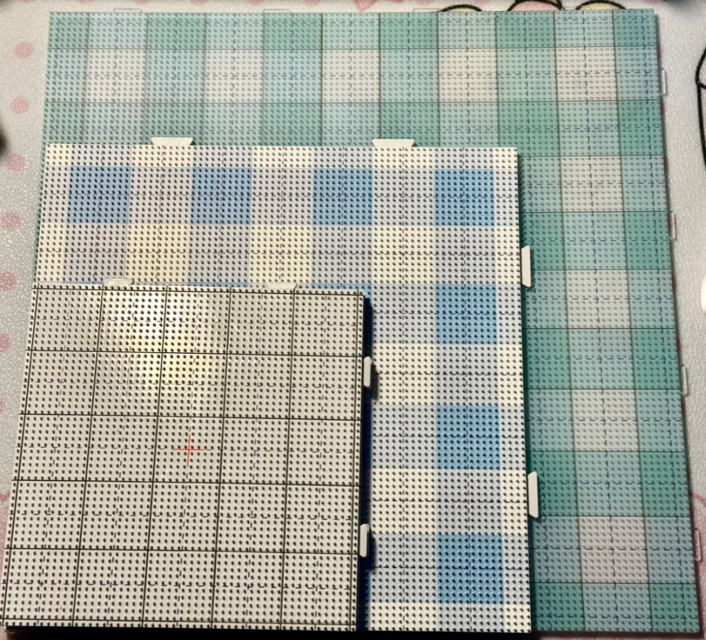
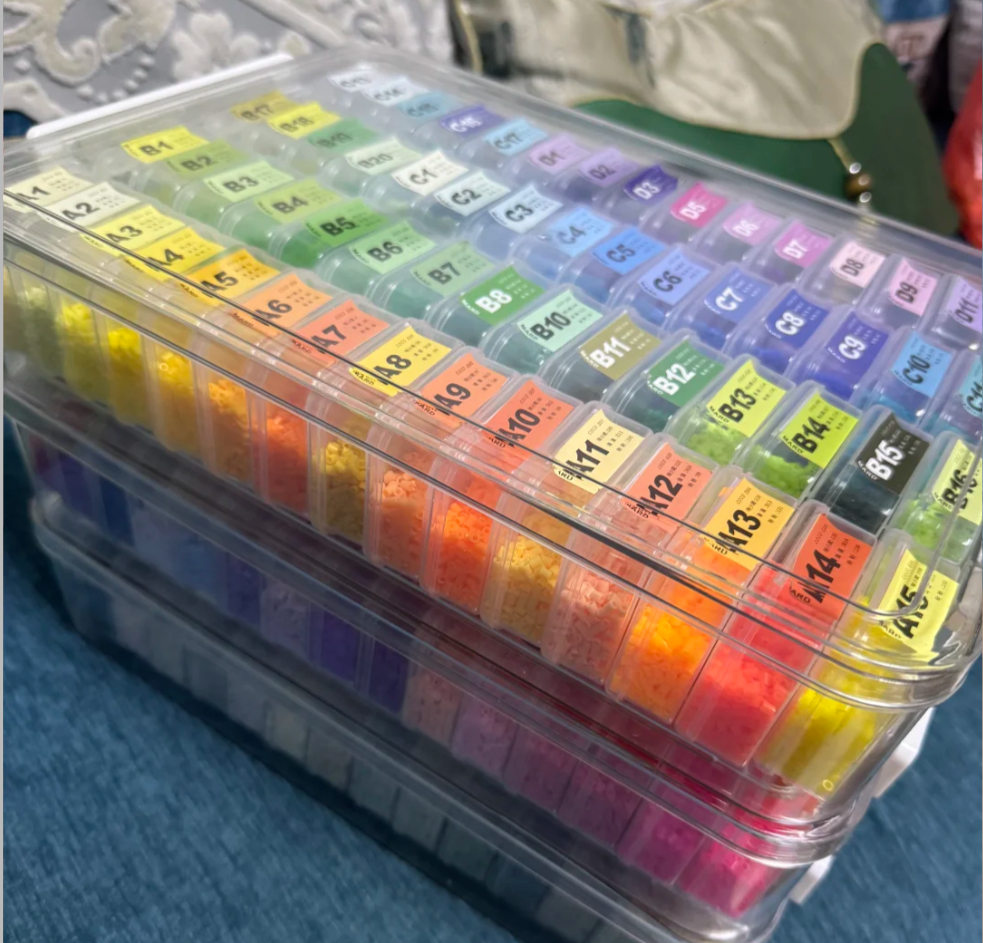
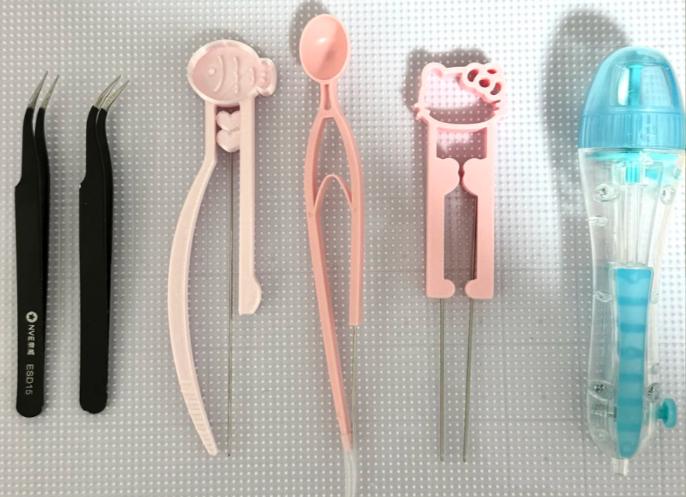
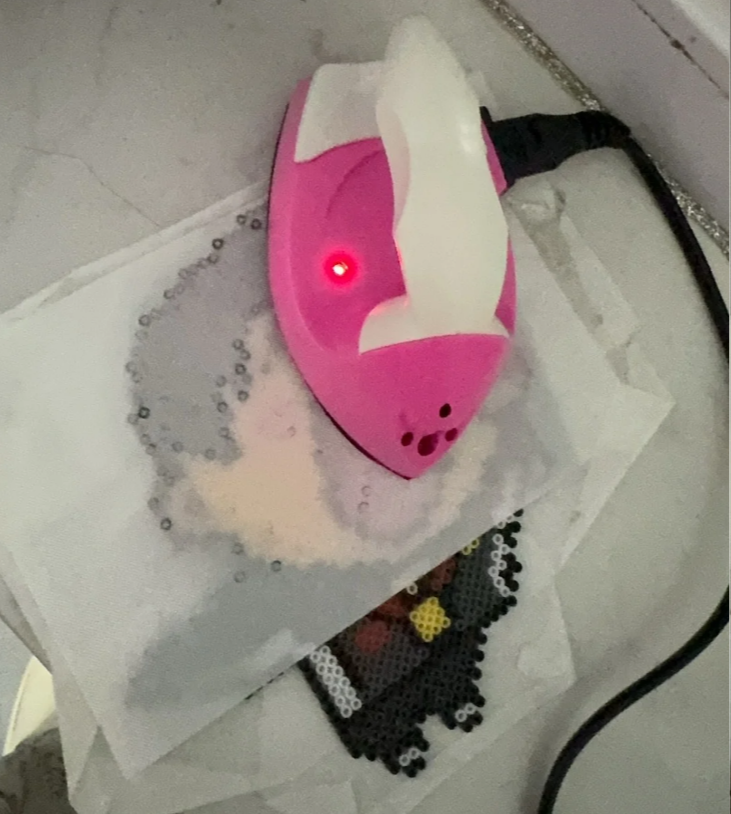
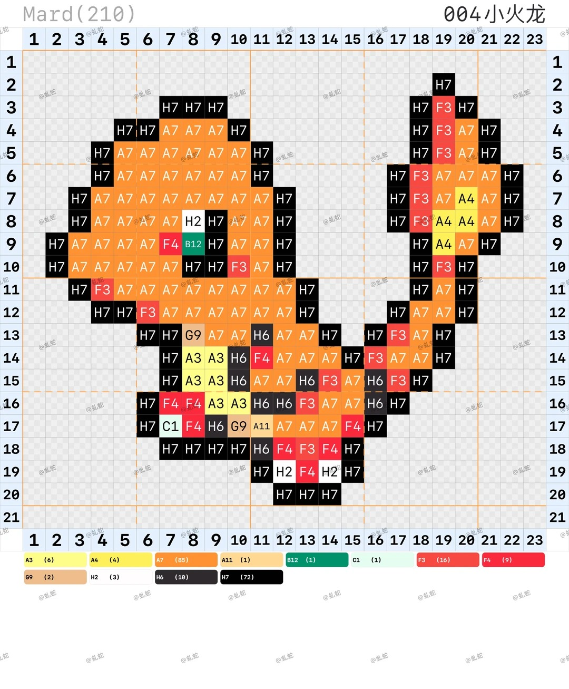
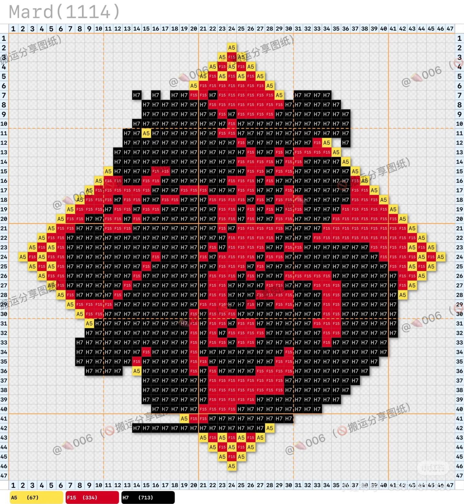
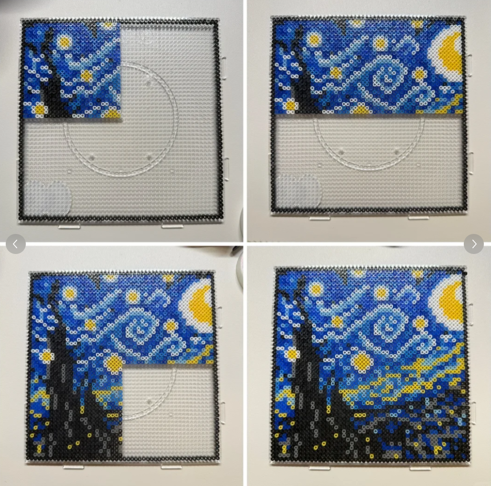

豆板
透明网格豆板方便对照图稿摆放，常见有方形板、圆形板和可拼接大板。

第一次做拼豆，不需要一次性买最全。先认清核心工具，再按标准流程完成一件作品，效率和成品稳定度都会高很多。
透明网格豆板方便对照图稿摆放，常见有方形板、圆形板和可拼接大板。

按色号分类收纳最省时间，新手建议先从基础 12 色开始建立色感。

用于精准粘取、放置和微调拼豆颗粒，大幅降低操作难度，提升制作效率与成品精度。

分区短时间加热更容易控制，烫完后记得压平冷却，避免翘边。

用横向步骤卡替代单调段落，信息更清楚，也更符合课程作业的页面结构要求。
从 10 × 10 到 16 × 16 的图开始练，优先选择颜色不超过 6 种的图案。
先摆轮廓再补色块，随时检查是否有缺豆、错位和颜色放错的问题。
平铺熨斗纸后轻压移动，避免停留过久，先让豆子表面微微闭口即可。
取下后放在平面上压平，等完全冷却再翻面处理或加挂件配件。
参考作品约 210 粒，颗粒数少、色块明确、轮廓简单，适合第一次完成作品建立信心。

参考作品约 1114 粒，开始涉及更多颜色层次、转折边缘和更高的图案辨识要求。

参考作品约 4500 粒，颗粒数和配色都明显上升，更考验耐心、规划和长时间专注能力。

建议先从简单图案开始，先看看自己能不能坐得住、能不能接受重复摆豆的过程；等耐心和节奏稳定下来，再去挑战颗粒数更高、更复杂的作品。